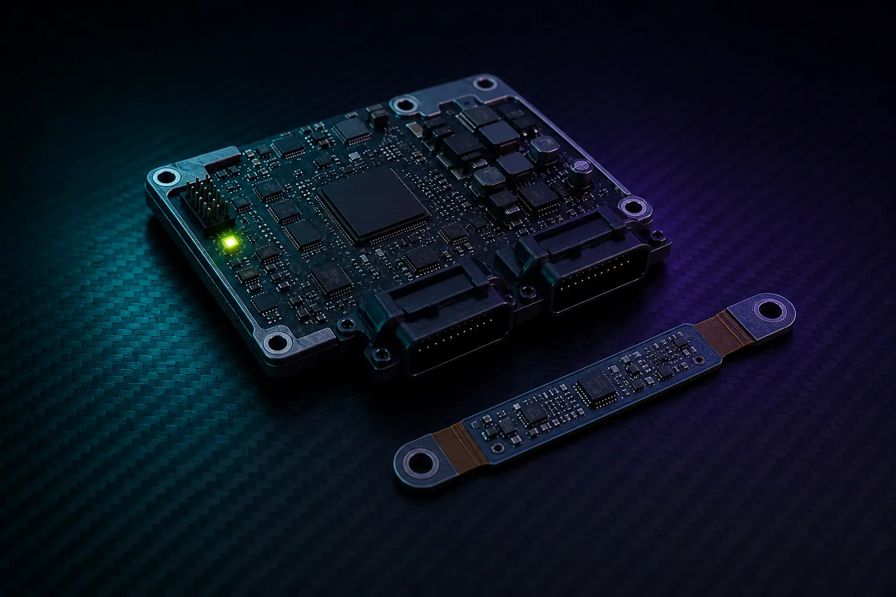

Compact voice and edge AI
Audio, local sensing and cellular expansion on a manufacturable compact platform.
Case study
A compact controller and mechanically constrained sensor boards engineered together for demanding data-acquisition environments.

Challenge
The sensing system had to live inside tight mechanical envelopes, survive harsh vibration and temperature, and still deliver reliable measurements to a central controller. Individual boards could not be designed in isolation: connector choice, board outline, power and acquisition timing had to work as one distributed system.
Approach
Outcome
The programme showed that Active-Edge’s value is not only single-board compute. Distributed sensing needs co-designed controllers, sensor electronics and mechanical fit—skills that carry into industrial monitoring, vehicle systems and other harsh-environment products where a catalogue module alone is not enough.
Case studies
Audio, local sensing and cellular expansion on a manufacturable compact platform.
Gateway engineering that keeps radio choices replaceable as networks evolve.
Your programme
Bring the mechanical envelope, interfaces, environment and data path. We will identify where a standard platform helps and where focused sensing electronics are required.